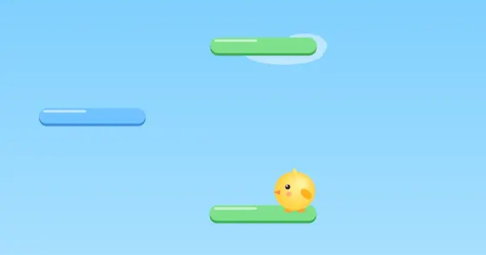

구름 점프
Cloud Jump
점프 · 끝없이무료설치 없음폰 · PC
▶ 지금 바로 하기로그인 없이 브라우저에서 바로 시작돼요
어떤 게임인가요?
통통 튀는 병아리를 좌우로 움직여 발판을 밟고 하늘 끝까지! 스프링·풍선을 타면 쭉 솟구치고, 부서지는 발판과 벌을 조심.
목표 · 통통 튀는 병아리를 좌우로 움직여 발판을 밟고 최대한 높이 올라가세요.
이렇게도 찾아요
점프 게임위로 올라가기무한 점프jump gameendless jumpcloud jump
#점프게임 #무한점프 #미니게임
게임 방법
- 병아리는 발판에 닿으면 저절로 튀어 올라요. 좌우만 움직이면 돼요.
- 화면 왼쪽 끝으로 나가면 오른쪽에서, 오른쪽 끝으로 나가면 왼쪽에서 나와요.
- 갈색 발판은 밟으면 부서져요. 하얀 구름 발판은 한 번 밟으면 사라지고, 파란 발판은 좌우로 움직여요.
- 스프링을 밟으면 크게, 분홍 풍선을 잡으면 한동안 쭉 솟아올라요.
- 벌은 위에서 밟으면 물리치고 +20m 보너스. 옆이나 아래에서 부딪히면 끝.
- 아래로 떨어져 화면 밖으로 나가면 끝.
등장하는 것들
- 초록 발판 · 기본
- 파란 발판 · 좌우로 움직임
- 구름 발판 · 한 번 밟으면 사라짐
- 갈색 발판 · 밟으면 부서짐
- 스프링 · 높이 점프
- 풍선 · 쭉 솟아오름
- 벌 · 위에서 밟기
공략 팁
- 떨어지는 중에 다음 발판 바로 위로 미리 가 있으세요.
- 갈색 발판은 밟지 말고 지나쳐요.
- 100m마다 점선이 있어요. 노란 줄은 내 최고 기록!
 솔리테어
솔리테어 추억의 핀볼
추억의 핀볼 막대 파이터
막대 파이터 골목 대장
골목 대장 공룡 달리기
공룡 달리기 한방 벽돌깨기
한방 벽돌깨기